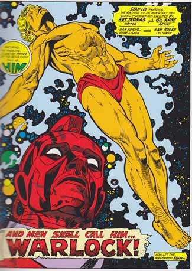

First Appearence: Fantastic Four #67 as "Him"
Writer: Roy Thomas
Illustrator: Gil Kane
Publisher: Marvel Comics
Ability:
Titles: Marvel Premiere, Warlock
Biography:
Created by Stan Lee and Jack Kirby "Him" was originally an artificial human created by the group of researchers who called themselves the Beehive.
He promptly encountered Thor, and attempted the abduction of the Lady Sif in order to mate with her. Thor naturally took offense to this kidnapping, and promptly beat the young Godling near to death. Him promptly retreated to the safety of a regenerative cocoon, and blasted off into outspace.
Reborn from a cocoon (a virgin birth in all but name), he was later christened to higher being status by the High Evolutionary who gave him the vampiric Soul Gem and set him up as the Messiah-like protector of Counter-Earth. The very first splash page image of Warlock was Gil Kane’s take on the Crucifixion (Marvel Premiere #1).

Apparently, Roy Thomas, the main architect of the re-imagined Adam Warlock, was a fan of the Andrew Lloyd-Webber musical Jesus Christ Superstar. It was a bold, if not entirely successful, attempt to do something a little bit different in comics.
Titles:
Avengers Annual Vol1 #7
Essential Warlock
Fantastic Four #67
Guardians of the Galaxy vol2 #1, #17
Hulk #177, 178
Infinity Crusade
Infinity Entity
Infinity Gauntlet
Infinity Gauntlet Aftermath
Infinity War
Marvel Graphic Novel #1
Marvel Masterworks Warlock
Marvel Premiere #1, 2
Marvel Team-Up #55
Marvel Two-In-One Annual Vol 1 #2
Strange Tales Vol 1 178-181
Thanos: The Infinity Revelation
Thanos: The Infinity Finale
Thor #165
Thor Blood and Thunder
Warlock #9-15?
Warlock by Jim Starlin: The Complete Collection